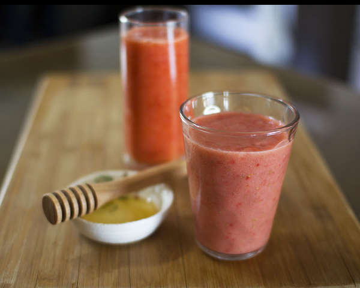

Juicy Juice

for 1 person
Tool
Blender
time
10m
Kcal
-
Ingredients
1/2 Red bell pepper
1 Grapefruit
2 tablespoons Honey(desired)
10 Strawberry
1 Banana
Recipe
Remove the seeds from the bell pepper, and cut in bite-size. Peel the grapefruit off, and dice. Remove the seeds inside.
Cut the banana in bite-size, and remove the stem of strawberries.
Soak the strawberries in the vinegar or baking soda added water, and rinse.
Blend the fruit. After tasting, add some honey if desired.
